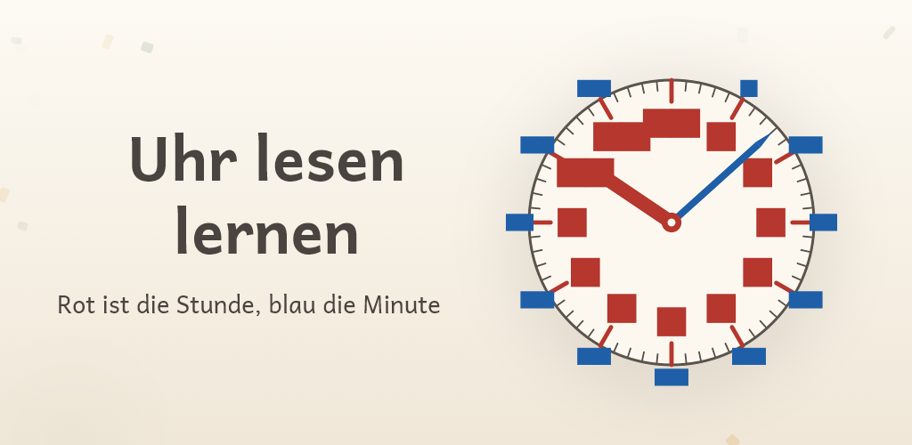

Die Uhrzeit lernen – für die Grundschule
Für Kinder in der 1. und 2. Klasse

Uhr lesen lernen ist eine Lern-App für Kinder, die die analoge und die digitale Uhr sicher ablesen sollen. Der Stundenzeiger ist rot, kurz und stumpf, der Minutenzeiger blau, lang und spitz – und das Zifferblatt trägt beide Skalen in denselben Farben: innen die roten Stundenzahlen, außen der blaue Minutenkranz. So sieht ein Kind auf einen Blick, welcher Zeiger auf welchem Kranz gelesen wird.
Diese Hilfe verschwindet planmäßig. Stufe für Stufe verblasst der blaue Kranz, bis am Ende die ganz normale Uhr dasteht – die, die im Klassenzimmer hängt.
Drei Lernwege, 76 Übungsrunden
- Uhr ablesen – die Uhr steht, das Kind wählt die richtige Zeit
- Uhr stellen – die Zeit wird angesagt, das Kind dreht die Zeiger selbst
- Uhren-Paare – analoge Uhr, Ziffernanzeige und Sprechweise gehören zusammen
In 14 Stufen geht es vom ersten Blick aufs Zifferblatt bis zur minutengenauen Uhrzeit: volle Stunden, halbe Stunden, Viertel nach und Viertel vor, die Vier-Viertel-Uhr, Fünf-Minuten-Schritte, einzelne Minuten. Am Ende jedes Lernwegs wartet eine Übung, die nie leer wird.
Was die App bietet
- Analoge und digitale Uhr, Stunden- und Minutenzeiger, Zifferblatt mit Minutenkranz
- Farbcodierte Zeiger als Lernhilfe, die planmäßig wieder verschwindet
- Zeigerfarben tauschbar – passend zur Uhr im Klassenzimmer
- Alle drei deutschen Sprechweisen: „Viertel vor sieben", „dreiviertel sieben", „viertel sieben"
- Jede Aufgabe wird vorgelesen – auch für Kinder, die noch nicht lesen
- Nach dem zweiten Fehlversuch löst die App die Aufgabe auf, statt nur „falsch" zu sagen
- Ruhiger Lernweg mit wachsenden Pflanzen statt Punktejagd
- Gemacht für Smartphone und Tablet
Für Eltern gemacht
- Keine Werbung, kein Abo, kein Konto, kein Tracking
- Komplett offline – Internet braucht nur der eine Kauf
- Kein Zugriff auf Mikrofon, Kamera, Kontakte oder Standort
- Eltern-Bereich mit dem Lernfortschritt: woran das Kind gerade hängt
- Kein Zeitdruck, keine Leben, keine Ranglisten
- Die ersten 12 Übungsrunden kostenlos, danach ein einmaliger Kauf – kein Abo
Bald bei Google Play.